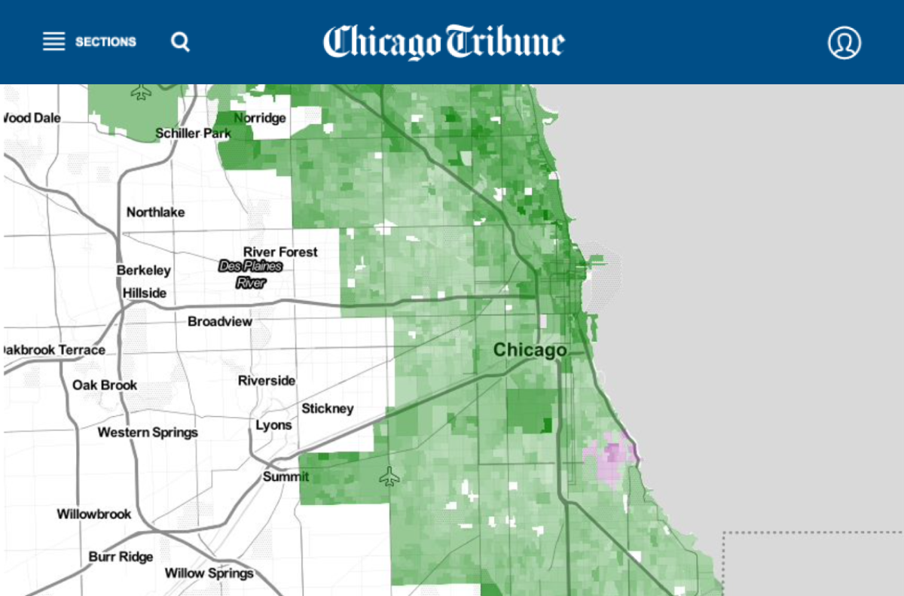
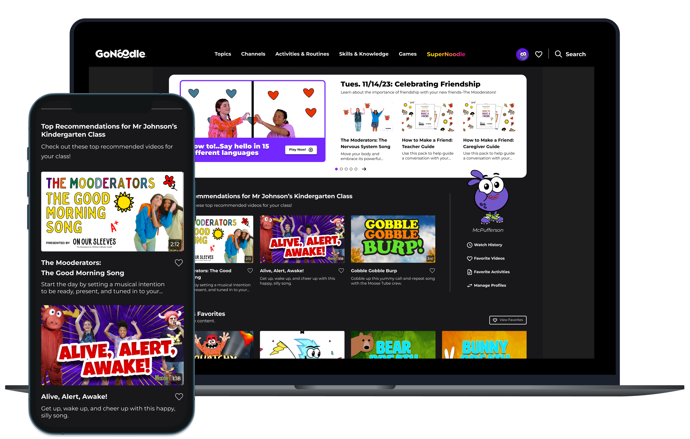
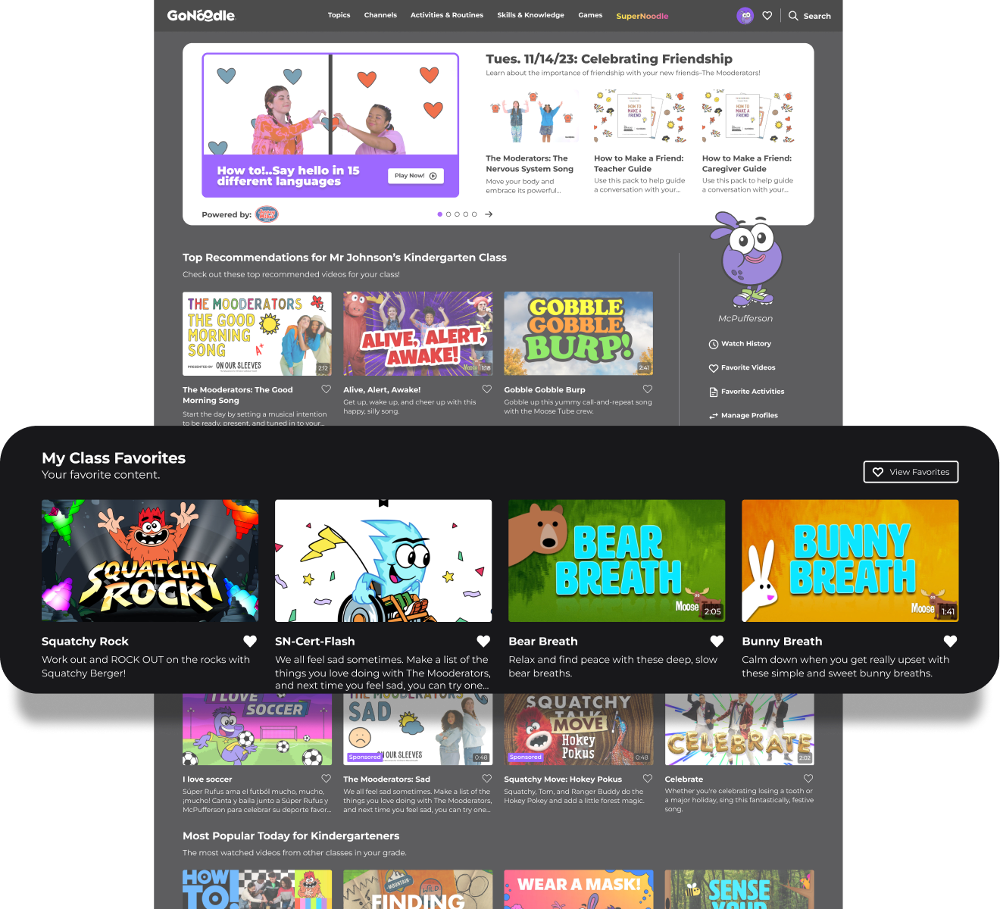
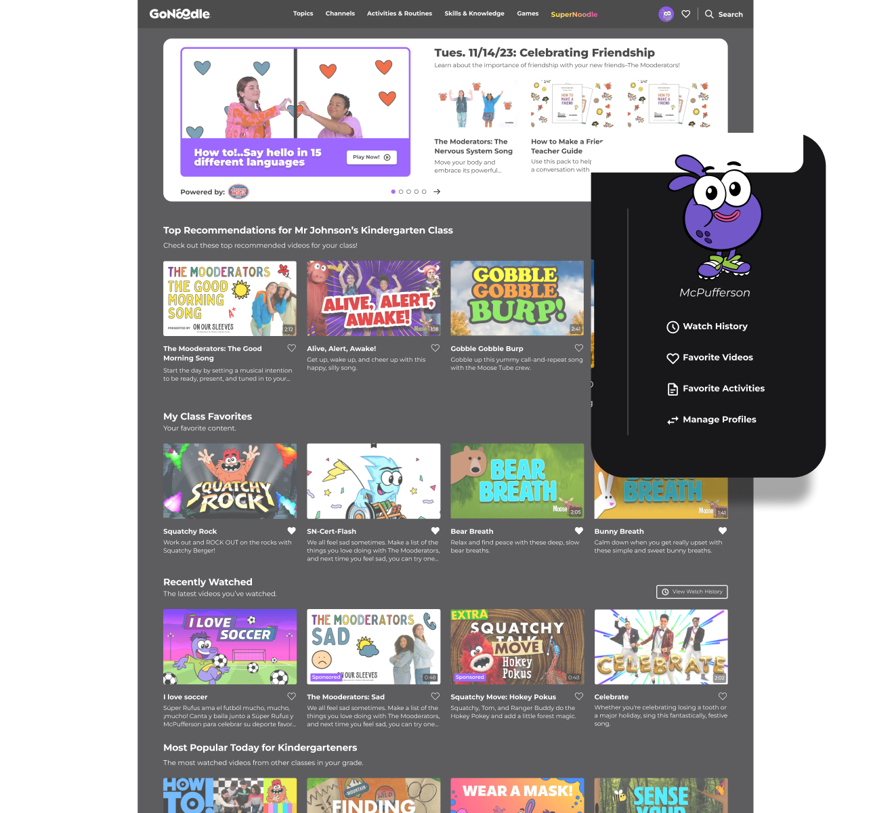
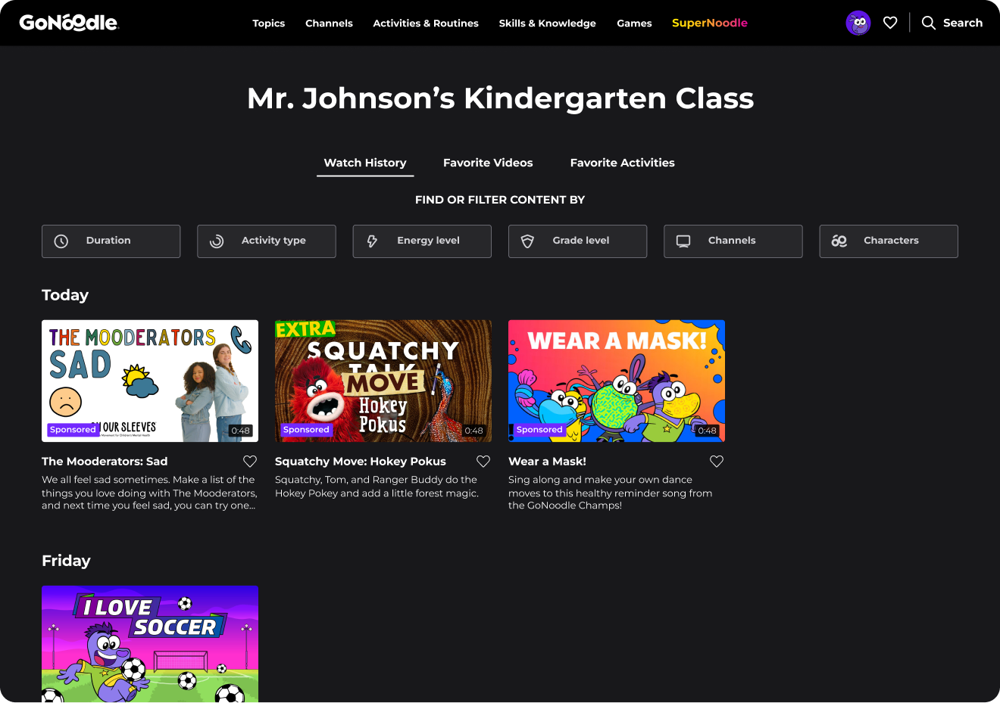
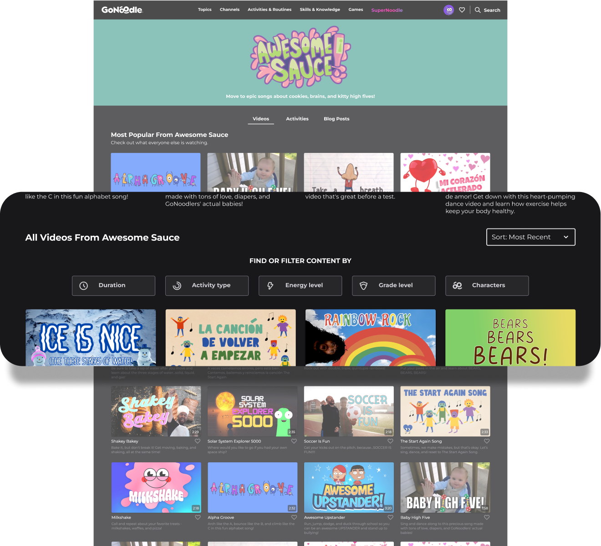
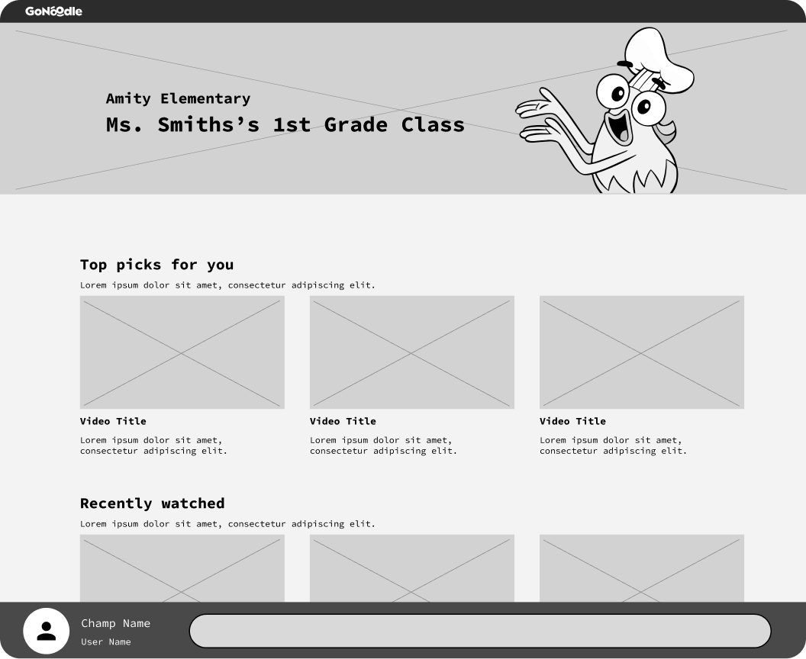
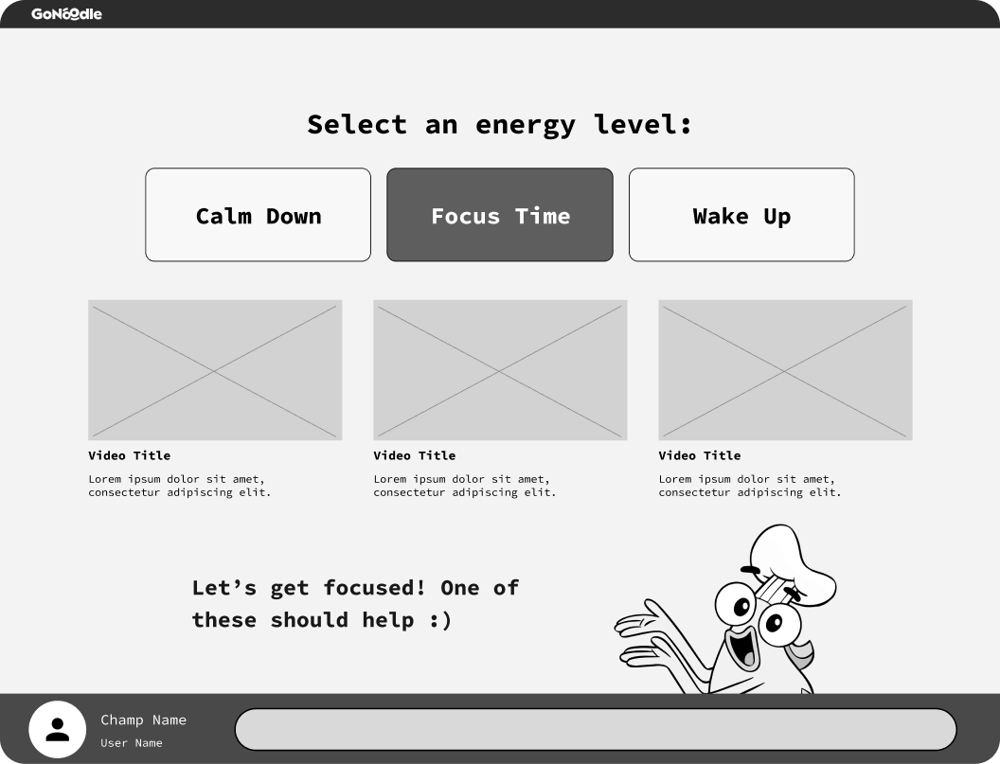

GoNoodle: UX Triage

The Problem
GoNoodle gives teachers a way to build short movement and transition breaks into the school day, the kind of tool that becomes part of a classroom's rhythm.
In 2023, GoNoodle released a redesign of the platform. Users were angry. Sentiment turned negative, and the number of teachers regularly using the product dropped significantly. My team was brought in as an external UX partner with a clear mission: Figure out what went wrong, reduce the fallout, and fix it.
This project was also time-sensitive. We had about four weeks to validate the problem, address it with new designs and re-test.
The Solution

The first instinct in a situation like this is to redesign again. Something isn't working, so you rebuild it. But one of the most important things we established early on was that this instinct was wrong.
Teachers had just experienced a major change to a product they used in front of their students every day. It landed right before back-to-school season, one of the highest-pressure moments in a teacher's year, when there's no room for a familiar tool to suddenly work differently. The anger wasn't about the look of the product, but the disruption: Routines broken, muscle memory no longer right, all at the worst time.

Introducing another round of sweeping changes would have worsened the problem, not solved it. We focused the design work on something that came up in our initial research again and again: Teachers couldn't find their students' favorite videos.
The solution needed to be targeted and restrained. We made focused changes in three areas of the product. On the homepage, we surfaced favorited videos, added a recently watched list, and introduced personalized recommendations tailored to each teacher's class. On channel pages, we added structure, hierarchy, and filtering so teachers could quickly narrow down to what was relevant. And we gave the class mascot more prominence at the moment points are awarded, restoring a moment of delight that the redesign had removed.


The Impact
As a one-time consulting engagement, I didn't have access to post-release data. The designs continued shipping into the product after we wrapped.
The Process
Understanding the real source of frustration
We started by analyzing responses from a GoNoodle survey, looking for themes that could focus the project. What surfaced early was consistent. Teachers had too many clicks to get to the videos they used regularly, and they were running into that friction in real time, in class in front of their students.
From there, I conducted focused interviews with current users. The goal was to understand how teachers actually use GoNoodle in the classroom and what had changed since the redesign.
What emerged from the interviews wasn't a single clear culprit. The dissatisfaction came from an accumulation of smaller pain points. The way users found videos had changed. Established routines had been disrupted. And most importantly, teachers hadn't known the change was coming until they were already in the classroom, students watching, trying to pull up a familiar video that no longer behaved the way they expected. Teachers had set routines, and the redesign broke those routines without warning.
Validating at scale before going deep
To pressure-test the findings, we sent a survey to 700+ GoNoodle users. We also developed a set of low-fidelity design concepts addressing the pain points we'd identified and included them in the survey to gauge whether they moved the needle on satisfaction. We wanted to test ideas quickly before going high-fidelity rather than rushing in blind.
The results focused our path forward. The overall top contributing factor to dissatisfaction was the ability to quickly find and play video. Despite a large library of videos, teachers tend to pick videos they've seen before and know their students like. The content they relied on most wasn't where they expected it to be.
The survey also confirmed what not to focus on. Most teachers were satisfied with GoNoodle's visual design, which ruled out aesthetics as a meaningful factor in the loss of users.
Low-fidelity design: Moving fast with a clear constraint


With a focused problem to solve, we moved into low-fidelity wireframes. The central question was straightforward. How do we get the right video in front of the right teacher, as fast as possible?
We explored three directions. The first added structure and hierarchy to individual channel pages, with filtering by duration, activity type, energy level, grade level, and character. The second introduced a personalized "My Class" homepage with a recently watched list, favorites shelf, and class-specific recommendations. The third was a guided "Pick For Me" flow that let teachers receive curated video suggestions.
Low-fidelity designs let us move quickly, share progress frequently with the client team, and stress-test ideas before committing to higher-fidelity work.
High-fidelity and validation
After client feedback on the low-fi work, we moved into high fidelity. The design direction centered on surfacing the right content faster, without altering the fundamental way teachers navigate the product.
We validated the designs across user focus groups. Teachers responded strongly to seeing familiar videos surfaced prominently and the personalized recommendations shelf landed well. Teachers also told us that seeing popular videos from peers would help them discover content they were missing. And seeing the class mascot on the homepage made the experience feel personal in a way that resonated both for teachers and students.
One finding pushed back on a "Pick For Me" feature. Participants liked it but ranked it as lower priority than the homepage, history, and channel page improvements. We recommended holding it for a later release.
We wrapped the project with a full set of UX recommendations and validated designs.
Reflection
The most challenging part of this project wasn't the actual design work — it was operating with a client organization that was under major stress. That pressure shaped every conversation, and we had to focus on keeping the process grounded and the work steady.
On a project like this, the instinct to blow up designs is real. The research gave us the discipline to act deliberately instead. Making that case to a client who was anxious to act felt like the right kind of guidance for an external UX team.
If I could change one thing, I'd build a dedicated monitoring plan into the engagement from the start. Without that post-release data, my story ends at delivery.